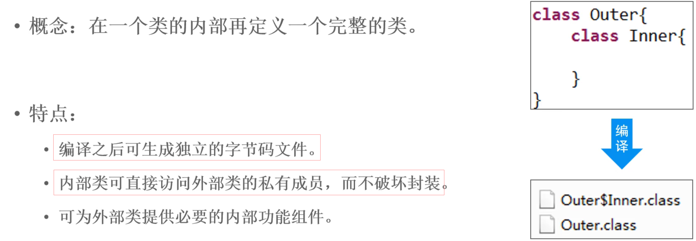
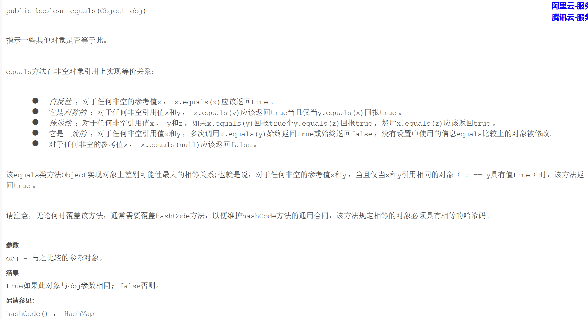

内部类

成员内部类
在类的内部定义，与实例变量、实例方法同级别的类
外部类的一个实例部分，创建内部类对象时，必须依赖外部类对象 当外部类、内部类存在重名属性时，会优先访问内部类属性
成员内部类里不能定义静态成员 、可以包含静态常量(final)
1 2 3 4 5 6 7 8 9 10 11 12 13 14 15 16 17 18 19 20 21 22 23 24 25 26 package com.yang;public class Outer { private String name = "张三" ; private int age = 20 ; class Inner { private String address = "北京" ; private String phone = "110" ; private String name = "李四" ; public void show () { System.out.println(Outer.this .name); System.out.println(age); System.out.println(name); System.out.println(address); System.out.println(phone); } } }
1 2 3 4 5 6 7 8 9 10 11 12 13 14 15 16 package com.yang;import com.yang.Outer.Inner;public class Test { public static void main (String[] args) { Inner inner = new Outer ().new Inner (); inner.show(); } }
静态内部类
不依赖外部类对象，可直接创建或通过类名访问，可声明静态成员
只能直接访问外部类的静态成员（实例成员需实例化外部类对象）
和外部类级别相同
1 2 3 4 5 6 7 8 9 10 11 12 13 14 15 16 17 18 19 20 21 22 23 24 25 26 27 28 29 30 31 32 33 34 package com.yang.Demo;public class test { public static void main (String[] args) { Outer outer = new Outer (); Outer.Inner inner=new Outer .Inner("123" ,"male" ); inner.print(); } } class Outer { private String name="李华" ; static class Inner { private String tel; private static String sex; public Inner (String tel,String sex) { this .tel=tel; Inner.sex=sex; } public Inner () { this ("" ,"" ); } public void print () { Outer outer = new Outer (); System.out.println(outer.name); System.out.println(tel); System.out.println(sex); } } }
局部内部类
定义在外部类方法 中，作用范围和创建对象范围仅限于当前方法
局部内部类访问外部类当前方法中的局部变量时，因无法保障变量的生命周期与自身相同，变量必须修饰为final
限制类的使用范围
1 2 3 4 5 6 7 8 9 10 11 12 13 14 15 16 17 18 19 20 21 22 23 24 25 26 27 28 29 package com.yang.Demo1;public class test { public static void main (String[] args) { Cat cat = new Cat (); cat.cry(5 ); } } class Cat { private String name="呼呼" ; public void cry (final int age) { class Mood { private String normal="喵喵" ; private String abnormal="嗷嗷" ; public void show () { System.out.println("name:" +Cat.this .name+" age:" +age+" is normal cry:" +this .normal); System.out.println("is abnormal cry:" +this .abnormal); } } Mood mood=new Mood (); mood.show(); } }
匿名内部类
没有类名的局部内部类（一切特征都与局部内部类相同）
必须继承一个父类或者实现一个接口
定义类、实现类、创建对象的语法合并，只能创建一个该类的对象
优点：减少代码量
缺点可读性较差
1 2 3 4 5 6 7 8 9 10 11 12 13 14 15 16 17 18 19 20 21 22 23 24 25 26 27 28 29 30 31 package com.yang.Demo2;interface Pet { public void cry () ; } class Dog implements Pet { @Override public void cry () { System.out.println("汪汪汪" ); } } public class Main { public static void main (String[] args) { Dog dog = new Dog (); dog.cry(); } } class Main2 { public static void main (String[] args) { Pet pet = new Pet (){ @Override public void cry () { System.out.println("汪汪汪" ); } }; pet.cry(); } }
Object类
1 2 3 4 5 6 7 8 9 10 11 12 13 14 15 16 17 18 19 20 21 22 23 24 25 26 27 package com.yang.TestObject;public class Student { private String name; private int age; public Student (String name, int age) { this .name = name; this .age = age; } public String getName () { return name; } public void setName (String name) { this .name = name; } public int getAge () { return age; } public void setAge (int age) { this .age = age; } }
超类、基类，所有类的直接或间接父类，位于继承树的最顶层
任何类，如没有书写extends显示继承某个类，都默认直接继承Object类，否则为间接继承
Object类中所定义的方法，是所有对象都具备的方法
Object类型可以存储任何对象
作为参数，可接受任何对象
作为返回值，可返回任何对象
Object类常用方法 getClass()
public final Class<?> getClass(){}
返回引用中存储的实际对象类型
应用：通常用于判断两个引用中实际存储对象类型是否一致
1 2 3 4 5 6 7 8 9 10 11 12 13 14 15 16 17 package com.yang.TestObject;public class TestStudent { public static void main (String[] args) { Student s1 = new Student ("张三" , 20 ); Student s2 = new Student ("李四" , 22 ); Class class1 = s1.getClass(); Class class2 = s2.getClass(); System.out.println(class1); if (class1==class2){ System.out.println("s1和s2是同一类型" ); }else { System.out.println("s1和s2不是同一类型" ); } } }
1 2 class com .yang.TestObject.Students1和s2是同一类型
hashCode()
public int hashCode(){}返回该对象的哈希码值
哈希值根据对象的地址或字符串或数字使用hash算法计算出来的int类型的值 一般情况下相同对象返回相同哈希码
1 2 3 4 5 6 7 8 9 10 11 12 13 14 15 16 17 18 19 20 21 22 23 24 package com.yang.TestObject;public class TestStudent { public static void main (String[] args) { Student s1 = new Student ("张三" , 20 ); Student s2 = new Student ("李四" , 22 ); Class class1 = s1.getClass(); Class class2 = s2.getClass(); System.out.println(class1); if (class1==class2){ System.out.println("s1和s2是同一类型" ); }else { System.out.println("s1和s2不是同一类型" ); } System.out.println(s1.hashCode()); System.out.println(s2.hashCode()); Student s3 = s1; System.out.println(s3.hashCode()); } }
1 2 3 4 5 class com .yang.TestObject.Students1和s2是同一类型 460141958 1163157884 460141958
toSring()
public String toSring(){}
返回该对象的字符串表示（表现形式）
可以根据程序需求覆盖该方法，如：展示对象各个属性值
1 2 3 4 5 6 7 8 9 10 11 12 13 14 15 16 17 18 19 20 21 22 23 24 25 26 27 28 29 30 31 package com.yang.TestObject;public class TestStudent { public static void main (String[] args) { System.out.println("----------getClass方法-----------" ); Student s1 = new Student ("张三" , 20 ); Student s2 = new Student ("李四" , 22 ); Class class1 = s1.getClass(); Class class2 = s2.getClass(); System.out.println(class1); if (class1==class2){ System.out.println("s1和s2是同一类型" ); }else { System.out.println("s1和s2不是同一类型" ); } System.out.println("----------hashCode方法-----------" ); System.out.println(s1.hashCode()); System.out.println(s2.hashCode()); Student s3 = s1; System.out.println(s3.hashCode()); System.out.println("----------toString方法-----------" ); System.out.println(s1.toString()); System.out.println(s2.toString()); } }
1 2 3 4 5 6 7 8 9 10 ----------getClass方法----------- class com .yang.TestObject.Students1和s2是同一类型 ----------hashCode方法----------- 460141958 1163157884 460141958 ----------toString方法----------- com.yang.TestObject.Student@1b6d3586 com.yang.TestObject.Student@4554617c
Student重写toString方法
1 2 3 4 5 6 7 @Override public String toString () { return "Student{" + "name='" + name + '\'' + ", age=" + age + '}' ; }
1 2 3 4 5 6 7 8 9 10 ----------getClass方法----------- class com .yang.TestObject.Students1和s2是同一类型 ----------hashCode方法----------- 460141958 1163157884 460141958 ----------toString方法----------- Student{name='张三' , age=20 } Student{name='李四' , age=22 }
equals(Object obj) 
public boolean equals(Object obj){}默认实现为(this == obj), 比较两个对象地址是否相同 可进行覆盖，比较两个对象的内容是否相同
Object类的equals()方法是用来比较两个对象是否是同一个对象的，是则返回true
等价于操作符中的==
在简单数据类型(int float double等)中，直接比较值 在引用数据类型中比较的是是否是同一个对象（地址是否相同）
1 2 3 4 5 6 7 8 9 10 11 12 13 14 15 16 17 18 19 20 21 22 23 24 25 26 27 28 29 30 31 32 33 34 35 36 37 38 39 40 package com.yang.TestObject;public class TestStudent { public static void main (String[] args) { System.out.println("----------getClass方法-----------" ); Student s1 = new Student ("张三" , 20 ); Student s2 = new Student ("李四" , 22 ); Class class1 = s1.getClass(); Class class2 = s2.getClass(); System.out.println(class1); if (class1==class2){ System.out.println("s1和s2是同一类型" ); }else { System.out.println("s1和s2不是同一类型" ); } System.out.println("----------hashCode方法-----------" ); System.out.println(s1.hashCode()); System.out.println(s2.hashCode()); Student s3 = s1; System.out.println(s3.hashCode()); System.out.println("----------toString方法-----------" ); System.out.println(s1.toString()); System.out.println(s2.toString()); System.out.println("----------equals方法-----------" ); System.out.println(s1.equals(s2)); Student s4 = new Student ("小明" , 17 ); Student s5 = new Student ("小明" , 17 ); System.out.println(s4.equals(s5)); } }
1 2 3 4 5 6 7 8 9 10 11 12 13 ----------getClass方法----------- class com .yang.TestObject.Students1和s2是同一类型 ----------hashCode方法----------- 460141958 1163157884 460141958 ----------toString方法----------- Student{name='张三' , age=20 } Student{name='李四' , age=22 } ----------equals方法----------- false false
1 2 3 4 5 6 7 8 9 10 11 12 13 14 15 16 17 18 19 20 21 22 23 24 25 26 27 28 29 30 31 32 33 @override public boolean equals (Object obj) { if (this == obj){ return true ; } if (obj == null ){ return false ; } if (obj instanceof Student){ Student s = (Student)obj; if (this .name.equals(s.getName()) && this .age == s.getAge()){ return true ; } } return false ; }
1 2 3 4 5 6 7 8 9 10 11 12 13 ----------getClass方法----------- class com .yang.TestObject.Students1和s2是同一类型 ----------hashCode方法----------- 460141958 1163157884 460141958 ----------toString方法----------- Student{name='张三' , age=20 } Student{name='李四' , age=22 } ----------equals方法----------- false true
finalize()
当对象被判定为垃圾对象时，由JVM自动调用此方法，用以标记垃圾对象，进入回收队列
垃圾对象：没有有效引用指向此对象时，为垃圾对象
垃圾回收：由gc销毁垃圾对象，释放数据存储空间
自动回收机制：JVM的内存耗尽，一次性回收所有垃圾对象
手动回收机制：使用System.gc();通知JVM执行垃圾回收
1 2 3 4 @Override protected void finalize () throws Throwable{ System.out.println(this .name + "对象被回收了" ); }
1 2 3 4 5 6 7 8 9 10 11 12 13 package com.yang.TestObject;public class TestStudent2 { public static void main (String[] args) { Student s1 = new Student ("aaa" , 29 ); new Student ("bbb" , 30 ); System.gc(); System.out.println("回收垃圾" ); } }
包装类
基本数据类型所对应的引用数据类型
Object 可统一所有数据，包装类的默认值是null
基本数据类型
Size
包装类型
byte
1
Byte
short
2
Short
int
4
Integer
long
8
Long
float
4
Float
double
8
Double
boolean
1
Boolean
char
1
Character
类型转换与装箱和拆箱
1 2 3 4 5 6 7 8 9 10 11 12 13 14 15 16 17 18 19 20 21 22 23 24 25 26 27 28 29 30 31 32 33 34 35 36 37 38 39 40 41 42 43 44 45 package com.yang.TestInteger;public class demo01 { public static void main (String[] args) { int num1 = 18 ; Integer integer1 = new Integer (num1); Integer integer2 = Integer.valueOf(num1); Integer integer3 = new Integer (100 ); int num2 = integer3.intValue(); int age = 30 ; Integer integer4 = age; int age2 = integer4; int n1 = 100 ; String s1 = n1 + "" ; String s2 = Integer.toString(n1); String str = "150" ; int n2 = Integer.parseInt(str); String str2 = "true" ; boolean b1 = Boolean.parseBoolean(str2); String str3 = "11我" ; boolean b3 = Boolean.parseBoolean(str3); } }
整数缓冲区
Java预先创建了256个常用的整数包装类型对象 在实际应用当中，对已创建的对象进行复用
1 2 3 4 5 6 7 8 9 10 11 12 13 14 15 16 17 public static void main (String[] args) { Integer integer1 = new Integer (100 ); Integer integer2 = new Integer (100 ); System.out.println(integer1 == integer2); Integer integer3 = 100 ; Integer integer4 = 100 ; System.out.println(integer3 == integer4); Integer integer5 = 200 ; Integer integer6 = 200 ; System.out.println(integer5 == integer6); }
Integer.valueOf(int i)
缓存区数组 [-128, 127] 在这之内地址一样
1 2 3 4 5 public static Integer valueOf (int i) { if (i >= IntegerCache.low && i <= IntegerCache.high) return IntegerCache.cache[i + (-IntegerCache.low)]; return new Integer (i); }
1 2 3 4 5 6 7 8 9 10 11 12 13 14 15 16 17 18 19 20 21 22 23 24 25 26 27 28 29 30 31 32 33 private static class IntegerCache { static final int low = -128 ; static final int high; static final Integer cache[]; static { int h = 127 ; String integerCacheHighPropValue = sun.misc.VM.getSavedProperty("java.lang.Integer.IntegerCache.high" ); if (integerCacheHighPropValue != null ) { try { int i = parseInt(integerCacheHighPropValue); i = Math.max(i, 127 ); h = Math.min(i, Integer.MAX_VALUE - (-low) -1 ); } catch ( NumberFormatException nfe) { } } high = h; cache = new Integer [(high - low) + 1 ]; int j = low; for (int k = 0 ; k < cache.length; k++) cache[k] = new Integer (j++); assert IntegerCache.high >= 127 ; } private IntegerCache () {} }
String类
字符串是常量，创建之后不可改变 字符串字面值存储在字符串池中(方法区)，可以共享 String s = “Hello”;产生一个对象，字符串池中存储
String s = new String(“Hello”); 产生两个对象，堆、池各一个
1 2 3 4 5 6 7 8 9 10 11 12 13 14 15 16 package com.yang.TestString;public class String01 { public static void main (String[] args) { String name = "hello" ; name="zhangsan" ; System.out.println(name); String name2 = "zhangsan" ; String str = new String ("java" ); String str2 = new String ("java" ); System.out.println(str==str2); System.out.println(str.equals(str2)); } }
常用方法 1 2 3 4 5 6 7 8 9 10 11 12 13 14 15 16 17 18 19 20 21 22 23 24 25 26 27 28 29 30 31 32 33 34 35 36 37 38 39 40 41 42 43 44 45 46 47 48 49 50 51 52 53 54 55 56 57 58 59 60 61 62 63 64 65 66 67 68 69 70 71 72 73 74 75 76 77 78 79 80 81 82 package com.yang.TestString;import java.util.Arrays;public class String02 { public static void main (String[] args) { String content = "java是最好的语言 java" ; System.out.println(content.length()); System.out.println(content.charAt(content.length() - 1 )); System.out.println(content.contains("java" )); System.out.println(Arrays.toString(content.toCharArray())); System.out.println(content.indexOf("java" )); System.out.println(content.indexOf("java" , 4 )); System.out.println(content.lastIndexOf("java" )); String ct = " hello world " ; System.out.println(ct.trim()); System.out.println(ct.toUpperCase()); System.out.println(ct.toLowerCase()); String ct2 = "hello world" ; System.out.println(ct2.endsWith("world" )); System.out.println(ct2.startsWith("hello" )); System.out.println(content.replace("java" , "php" )); String say = "java is the best language" ; String[] arr = say.split(" " ); String say2 = "java is the best language,java" ; String[] arr2 = say2.split("[ ,]" ); for (String string : arr2){ System.out.println(string); } System.out.println(arr.length); for (String string : arr){ System.out.println(string); } String s1 = "hello" ; String s2 = "HELLO" ; System.out.println(s1.equalsIgnoreCase(s2)); String s3 = "abc" ; String s4 = "ayz" ; System.out.println(s3.compareTo(s4)); String s5 = "abc" ; String s6 = "abcxyz" ; System.out.println(s5.compareTo(s6)); } }
案例演示 需求：
已知String str = “this is a text”;
将str中的单词单独获取
将str中的text替换成practice
在text前面插入一个easy
将每个单词的首字母改为大写
1 2 3 4 5 6 7 8 9 10 11 12 13 14 15 16 17 18 19 20 21 22 23 package com.yang.TestString;public class String03 { public static void main (String[] args) { String str = "this is a text" ; String[] arr = str.split(" " ); for (String s : arr){ System.out.println(s); } String str2 = str.replace("text" , "practice" ); String str3 = str.replace("text" , "easy text" ); for (int i = 0 ; i < arr.length; i ++){ char first = arr[i].charAt(0 ); char upperfirst = Character.toUpperCase(first); String newWord = upperfirst + arr[i].substring(1 ); System.out.print(newWord); } } }
可变字符串
StringBuffer : 可变长字符串，运行效率慢、线程安全synchronized StringBuilder : 可边长字符串、运行快、线程不安全
效率都比String高且节省内存
1 2 3 4 5 6 7 8 9 10 11 12 13 14 15 16 17 18 19 20 21 22 23 24 25 package com.yang.TestString;public class Buffer_Builder { public static void main (String[] args) { StringBuffer sb = new StringBuffer (); sb.append("java世界第一" ); System.out.println(sb.toString()); sb.insert(0 , "在第一个位置插入" ); System.out.println(sb.toString()); sb.replace(1 , 4 , "超霸蛋" ); System.out.println(sb); sb.delete(0 , 5 ); System.out.println(sb.toString()); sb.delete(0 , sb.length()); System.out.println(sb.toString()); } }
StringBuffer
1 2 3 public StringBuffer () { super (16 ); }
点击super
1 2 3 4 5 6 7 AbstractStringBuilder(int capacity) { value = new char [capacity]; } char [] value;
StringBuilder
1 2 3 4 5 6 7 public StringBuilder () { super (16 ); }
点击super
1 2 3 4 5 6 7 AbstractStringBuilder(int capacity) { value = new char [capacity]; } char [] value;
BigDecimal类
位置 java.math 包中
作用 精确计算浮点数
创建方式 BigDecimal bd = new BigDecimal(“1.0”);
1 2 3 4 5 6 7 8 9 10 11 12 13 14 15 16 17 18 19 20 21 22 23 24 25 26 27 28 29 30 31 32 package com.yang.TestBigDecimal;import java.math.BigDecimal;public class Big_Decimal { public static void main (String[] args) { double d1 = 1.0 ; double d2 = 0.9 ; System.out.println(d1-d2); BigDecimal bd1 = new BigDecimal ("1.0" ); BigDecimal bd2 = new BigDecimal ("0.9" ); BigDecimal r1 = bd1.subtract(bd2); System.out.println(r1); BigDecimal r2 = bd1.add(bd2); System.out.println(r2); BigDecimal r3 = bd1.multiply(bd2); System.out.println(r3); BigDecimal r4 = new BigDecimal ("1.4" ).subtract(new BigDecimal ("0.5" )).divide(new BigDecimal ("0.9" )); BigDecimal r5 = new BigDecimal ("10" ).divide(new BigDecimal ("3" ), 2 , BigDecimal.ROUND_HALF_UP); System.out.println(r4); System.out.println(r5); } }
System类 主要用于获取系统的属性数据和其他操作，构造方法私有的
方法名
说明
static void arraycopy(…)
复制数组
static long currentTimeMillis();
获取当前系统时间，返回毫秒值
static void gc();
建议jvm赶快启动垃圾回收期器回收垃圾
static void exit(int status);
退出jvm 如果参数是0表示正常退出jvm 非0表示异常退出
1 2 3 4 5 6 7 8 9 10 11 12 13 14 15 16 17 18 19 20 21 22 23 24 25 26 27 28 29 30 31 package com.yang.TestSystem;public class SystemClass { public static void main (String[] args) { int [] arr = {20 , 18 , 39 , 3 ,123 ,21 ,24 }; int [] dest = new int [7 ]; System.arraycopy(arr, 1 , dest, 2 , 3 ); for (int i = 0 ; i < dest.length; i++) { System.out.print(dest[i]+" " ); } System.out.println("" ); System.out.println(System.currentTimeMillis()); System.gc(); System.exit(0 ); System.out.println("aaaaaaa" ); } }
Math类 Data类 Date表示特定的瞬间，精确到毫秒。Date类中的大部分方法都已经被Calendar类中的方法所取代
时间单位：1s = 1,000ms = 1,000,000 μs = 1,000,000,000 = ns
1 2 3 4 5 6 7 8 9 10 11 12 13 14 15 16 17 18 19 20 21 22 23 24 25 26 27 28 29 30 31 package com.yang.TestDate;import java.util.Date;public class DateClass { public static void main (String[] args) { Date date1 = new Date (); System.out.println(date1.toString()); System.out.println(date1.toLocaleString()); System.out.println(date1.getTime()); Date date2 = new Date (date1.getTime() - (60 *60 *24 *1000 )); System.out.println(date2.toLocaleString()); boolean b1 = date1.after(date2); System.out.println(b1); boolean b2 = date1.before(date2); System.out.println(b2); int d = date1.compareTo(date2); System.out.println(d); boolean b3 = date1.equals(date2); System.out.println(b3); } }
Calendar
Calendar提供了获取或设置各种日历字段的方法
构造方法 protected Calendar(); 由于是protected 所以无法直接创建 其他方法
方法名
说明
static Calendar getInstance()
使用默认时区和区域获取日历
void set(int year, int month, int date, int hourofday, int minute, int second)
设置日历的年、月、日、时、分、秒
int get(int field)
返回给定日历字段的值。字段比如年、月、日
void setTime(Date date)
用给定的date设置此日历时间
Date getTime()
返回一个date表示此日历的时间
void add(int field, int amount)
按照日历的规则，给指定字段添加或减少时间量
long getTimeInMilles()
毫秒为单位返回该日历的时间值
1 2 3 4 5 6 7 8 9 10 11 12 13 14 15 16 17 18 19 20 21 22 23 24 25 26 27 28 29 30 31 32 33 34 35 36 package com.yang.TestDate;import java.util.Calendar;public class CalendarClass { public static void main (String[] args) { Calendar calendar = Calendar.getInstance(); System.out.println(calendar.getTime().toLocaleString()); int year = calendar.get(Calendar.YEAR); int month = calendar.get(Calendar.MONTH); int day = calendar.get(Calendar.DAY_OF_MONTH); int hour = calendar.get(Calendar.HOUR_OF_DAY); int minute = calendar.get(Calendar.MINUTE); int second = calendar.get(Calendar.SECOND); Calendar calendar2 = Calendar.getInstance(); calendar2.set(Calendar.DAY_OF_MONTH, 1 ); System.out.println(calendar2.getTime().toLocaleString()); calendar2.add(Calendar.HOUR, 1 ); System.out.println(calendar2.getTime().toLocaleString()); int max = calendar2.getActualMaximum(Calendar.DAY_OF_MONTH); int min = calendar2.getActualMinimum(Calendar.DAY_OF_MONTH); System.out.println(max); System.out.println(min); } }
SimpleDateFormat是一个以与语言环境有关的方式来格式化和解析日期的具体类
进行格式化（日期→文本）、解析（文本→日期） 常用的时间模式字母
字母
日期或时间
示例
y
年
2019
08
年中月份
08
d
月中天数
10
H
一天中小时（0-23）
22
m
分钟
16
s
秒
59
S
毫秒
356
1 2 3 4 5 6 7 8 9 10 11 12 13 14 15 16 17 18 19 20 package com.yang.TestDate;import java.text.ParseException;import java.text.SimpleDateFormat;import java.util.Date;public class SimpleDateFormatClass { public static void main (String[] args) throws ParseException { SimpleDateFormat sdf = new SimpleDateFormat ("yyyy/MM/dd HH-mm-ss" ); Date date = new Date (); String str = sdf.format(date); System.out.println(str); Date date2 = sdf.parse("1948/03/12 11-12-30" ); System.out.println(date2); } }